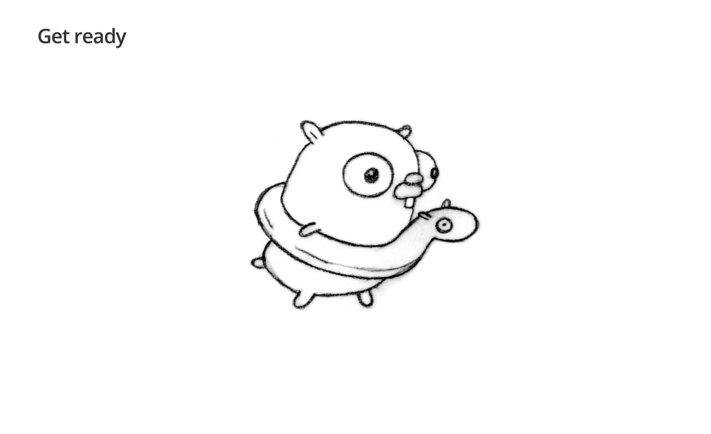

大家好，我是江湖十年。
接着上一篇 Rob Pike 的《Go Concurrency Patterns》，这次整理 Sameer Ajmani 在 2013 年 Google I/O 上的演讲《Advanced Go Concurrency Patterns》。如果说 2012 年那场讲的是并发原语的基础用法，这一场就进入了真实场景，如何写出长期运行、能够正确清理、可以被取消的并发程序。
内容从一个 ping-pong 小游戏入手，展示 goroutine 泄漏和死锁检测，然后完整实现了一个 RSS 订阅器，并逐一修复朴素实现中的三个 bug，最后总结出 for-select 循环、服务 channel 与回复 channel、nil channel 这几个关键技巧。
本文根据演讲 PPT 和视频整理，逐页讲解其中的内容。
演讲视频：https://www.youtube.com/watch?v=QDDwwePbDtw
演讲 PPT：https://go.dev/talks/2013/advconc.slide

图片来自 Sameer Ajmani 2013 演讲 PPT。
并发内建于语言之中
Go 在语言和运行时层面支持并发，而不是把它做成一个库。这会改变你组织程序结构的方式。
goroutine 是在同一地址空间中独立执行的函数：
1 | go f() |
channel 是带类型的值，让 goroutine 能够同步并交换信息：
1 | c := make(chan int) |
这些是基础。如果对 goroutine 和 channel 还不太熟，建议先补一下 Rob Pike 2012 年的《Go Concurrency Patterns》。
例子：ping-pong
先用一个小游戏来开场。两个玩家来回击球，球本身就是一个 channel：
1 | type Ball struct{ hits int } |
主函数把一个 Ball 发到 table 上，两个玩家从 table 接收球、加一、打印，再打回去。一秒之后，主函数从 table 把球收走，游戏结束。
死锁检测
如果主函数不发球会怎样？把发球那一行注释掉：
1 | func main() { |
主函数等待从 table 接收球，两个玩家也在等待从 table 接收球，而没有任何人发送。程序会立刻崩溃，并输出：
1 | fatal error: all goroutines are asleep - deadlock! |
Go 运行时会检测这种所有 goroutine 都永久阻塞的情况，也就是死锁。这是一项非常实用的能力。
panic 会打印所有栈
即使没有死锁，也可以在游戏进行中主动 panic，查看各个 goroutine 的状态：
1 | func main() { |
panic 会打印所有 goroutine 的调用栈。你可以清楚地看到 ping 和 pong 分别阻塞在 chan receive 还是 chan send，主函数又停在什么位置。栈转储和死锁检测器是调试并发程序时非常有力的工具，这一点值得反复强调。
问题：启动容易，停止难
go 关键字让启动并发变得很简单，但长期运行的程序还需要清理。接下来要讨论的，是如何编写能够处理通信、周期事件和取消的程序。
核心仍然是 select 语句。它类似 switch，但选择哪个分支，取决于哪个通信操作已经就绪：
1 | select { |
例子：RSS 阅读器
Sameer 最喜欢的 RSS 阅读器停止服务了，于是他决定自己写一个。从哪里开始？先找现成的 RSS 客户端。在 pkg.go.dev 上搜索 “rss”，可以找到一个提供如下接口的库：
1 | // Fetch fetches Items for uri and returns the time when the next |
Fetch 一次返回一批 Item、下一次应该抓取的时间，以及可能出现的错误。
但我们想要的是一个流：
1 | <-chan Item |
而且还想要多个订阅。已有的接口和期望的接口之间存在着差距，接下来要做的，就是把前者转换成后者。
现有的抽象如下：
1 | type Fetcher interface { |
期望的抽象如下：
1 | type Subscription interface { |
Subscribe 把周期性的 Fetch 调用转换成 Item 流，Merge 把多个订阅合并成一个流。
完整的使用示例如下：
1 | func main() { |
程序订阅三个博客，三秒后关闭合并后的订阅，同时不断打印收到的条目。最后的 panic 是为了让所有 goroutine 的栈都显示出来，方便观察清理是否完成。
搭建 Subscribe
Subscribe 创建一个新的订阅，它会反复抓取条目，直到 Close 被调用：
1 | func Subscribe(fetcher Fetcher) Subscription { |
为了让 sub 实现 Subscription 接口，还需要定义 Updates 和 Close：
1 | func (s *sub) Updates() <-chan Item { |
1 | func (s *sub) Close() error { |
此时 Close 还只是占位。先明确 loop 的职责，然后再逐步实现它。
loop 需要做三件事：
- 周期性地调用
Fetch； - 把抓到的条目发送到
Updateschannel； - 在
Close被调用时退出，并报告可能出现的错误。
朴素实现与三个 bug
最直观的写法是在循环里检查一个 closed 标志，然后抓取、发送、休眠：
1 | for { |
1 | func (s *naiveSub) Close() error { |
这段代码看起来合理，但有三个严重的问题。
Bug 1：对 s.closed 和 s.err 的访问没有同步
loop 在自己的 goroutine 里读取 s.closed、写入 s.err，而 Close 在主 goroutine 里写入 s.closed、读取 s.err。这是典型的数据竞争。
用竞态检测器运行程序就能发现：
1 | go run -race naivemain.go |
竞态检测器会明确报出，Close 对 s.closed 的写和 loop 对它的读之间存在 data race。这里顺带强调一下 -race 的价值。
图片来自 Sameer Ajmani 2013 演讲 PPT。
Bug 2：time.Sleep 会让 loop 无法及时退出
loop 中可能休眠很久。如果 Fetch 失败，它会休眠 10 秒；正常情况下，它也会一直睡到下一次抓取时间。在这段时间里，即使 Close 把 s.closed 设为 true，loop 也不会醒来检查，只能等休眠结束。清理因此被延迟。
Bug 3：loop 可能永远阻塞在 s.updates 上
如果用户不再从 Updates 接收条目，loop 就会永远阻塞在 s.updates <- item 这一行。它没有机会回到循环顶部检查 s.closed，于是永远不会退出。
这三个问题的根源相同，loop 在任何一个状态下都可能无限期阻塞，无法响应外部的取消。
解法：for-select 循环
解决方案是把 loop 的循环体改成一个包含三个 case 的 select：
Close被调用了；- 到了调用
Fetch的时间； - 可以向
s.updates发送一个条目。
结构如下：
1 | func (s *sub) loop() { |
loop 运行在自己的 goroutine 中，select 保证它不会在任何单一状态下无限阻塞。各个 case 之间通过 loop 内部的局部状态交互，而不是通过共享内存加锁。
Case 1：关闭
Close 需要和 loop 通信。这里使用一个”请求 channel”，它的元素类型本身又是一个 channel，用于回传错误：
1 | type sub struct { |
服务方（loop）在自己的 channel 上监听请求；客户端（Close）把请求发送到 s.closing，请求的内容是”退出，并把错误回复给我”。在这个例子中，请求里唯一的东西就是回复 channel。
Close 的实现如下：
1 | func (s *sub) Close() error { |
Close 发送一个回复 channel，然后等待 loop 的响应。
loop 收到请求后，把 Fetch 过程中记录的错误回复过去，关闭 updates 告诉接收方已经结束，然后返回：
1 | var err error // set when Fetch fails |
这样 Close 不仅能通知 loop 退出，还能确认它确实退出了，并拿到最终的错误。这就是”服务 channel + 回复 channel”的模式。
Case 2：抓取
抓取需要按计划进行。保存待抓取的条目、下一次抓取时间和错误：
1 | var pending []Item // appended by fetch; consumed by send |
next 的零值是 0001-01-01 00:00:00 +0000 UTC，所以第一次循环时 fetchDelay 为 0，会立即抓取。之后根据 Fetch 返回的 next 计算延迟。如果抓取失败，就把下一次尝试推迟 10 秒。
注意这里的 break 只会跳出 select，不会跳出 for 循环。失败时跳过 pending 的追加，然后继续下一轮。
Case 3：发送
发送逻辑看起来很简单，每次把 pending 的第一个元素发出去：
1 | var pending []Item // appended by fetch; consumed by send |
但这段代码会崩溃。当 pending 为空时，pending[0] 会触发 index out of range。
图片来自 Sameer Ajmani 2013 演讲 PPT。
解决办法是利用 nil channel 的特性。向 nil channel 发送、从 nil channel 接收都会永久阻塞，而 select 永远不会选择一个会阻塞的 case。例如：
1 | func main() { |
被置为 nil 的那个 channel 对应的 case 永远不会被选中，select 只会走另一个分支。
发送 case 的正确写法，是只在 pending 非空时才启用发送：
1 | var pending []Item // appended by fetch; consumed by send |
当 pending 为空时，updates 是 nil，发送 case 被禁用，select 不会选中它。这就是”用 nil channel 动态开关 case”的技巧。
把三个 case 合到一起
三个 case 共享 err、next 和 pending 这些局部状态，合并后就是完整的 loop 主体：
1 | select { |
三个 bug 都解决了：
- 所有对
closed和err的访问都发生在loop这一个 goroutine 里，不再有数据竞争； - 不再使用
time.Sleep，而是用time.After创建一个定时 channel，Close随时可以被select选中； - 发送 case 可以被 nil channel 禁用，
loop不会卡死在发送上，始终有机会处理Close。
并且依然没有锁、没有条件变量、没有回调。
改进一：去重
Fetch 可能返回重复的条目。维护一个已见 GUID 的集合，在加入 pending 之前过滤：
1 | var pending []Item |
1 | case <-startFetch: |
seen 由 loop 独占访问，所以仍然不需要加锁。
改进二：限制 pending 队列的长度
如果用户消费得慢，pending 会无限增长。可以设置一个上限：
1 | const maxPending = 10 |
当待发送条目达到上限时，禁用抓取 case：
1 | var fetchDelay time.Duration |
这里又一次用到了 nil channel。startFetch 的静态类型是 <-chan time.Time，当 pending 已满时保持为 nil，抓取 case 就不会被选中。另一种策略是从 pending 头部丢弃较旧的条目。
改进三：异步抓取
Fetch 可能很慢。如果直接在 select 的 case 里调用它，整个 loop 都会被阻塞，期间无法处理 Close，也无法发送条目。
解决办法是把 Fetch 放到单独的 goroutine 中执行，通过一个 fetchDone channel 把结果送回 loop：
1 | type fetchResult struct{ fetched []Item; next time.Time; err error } |
1 | var fetchDone chan fetchResult // if non-nil, Fetch is running |
只有在没有正在进行的抓取，并且 pending 未满时，才启用抓取：
1 | var startFetch <-chan time.Time |
select 中增加一个处理结果的 case：
1 | select { |
fetchDone 带有容量为 1 的缓冲区，保证抓取 goroutine 发送结果后可以退出，即使 loop 暂时还没准备好接收。结果被取走后，把 fetchDone 置为 nil，允许下一次抓取。
总结
到这里，Subscribe 就实现完了。它响应及时、能够正确清理、也容易阅读和修改。最后总结出三个关键技术：
- for-select 循环，让 goroutine 在多个状态之间保持响应；
- 服务 channel 与回复 channel（
chan chan error），让客户端能够请求退出并等待确认； - select case 中的 nil channel，用来动态启用或禁用某个分支。
完整的实现还包括 Merge，细节可以在线查看。
并发编程本身可能很棘手，Go 让它变得更容易：
- channel 可以传递数据、定时器事件和取消信号；
- goroutine 串行化了对局部可变状态的访问；
- 栈转储和死锁检测器；
- 竞态检测器。
本文完。
希望此文能对你有所启发。
延伸阅读
- Advanced Go Concurrency Patterns 演讲 PPT：https://go.dev/talks/2013/advconc.slide
- Advanced Go Concurrency Patterns 演讲视频：https://www.youtube.com/watch?v=QDDwwePbDtw
- 演讲代码：https://github.com/golang/talks/tree/master/content/2013/advconc
- Rob Pike 讲透 Go 并发模式：goroutine、channel 与 select：https://jianghushinian.cn/2026/11/06/go-concurrency-patterns-talk-basics/
- Go 并发模式：Context 译文：https://jianghushinian.cn/2026/11/03/go-concurrency-patterns-context/
- Go 并发模式：Pipeline 与取消 译文：https://jianghushinian.cn/2026/11/04/go-concurrency-patterns-pipelines/
- Go 并发模式：超时，不再等待 译文：https://jianghushinian.cn/2026/11/05/go-concurrency-patterns-timeouts/
- Concurrency is not parallelism：https://go.dev/s/concurrency-is-not-parallelism
- Share memory by communicating：https://go.dev/doc/codewalk/sharemem
- 本文永久地址：https://jianghushinian.cn/2026/11/07/go-concurrency-patterns-talk-advanced/
联系我
- 公众号：Go编程世界
- 微信：jianghushinian
- 邮箱：jianghushinian007@outlook.com
- 博客：https://jianghushinian.cn
- GitHub：https://github.com/jianghushinian